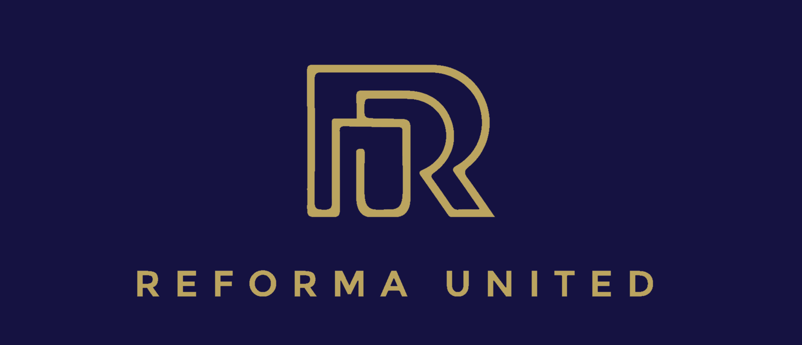

Arti Logo Reforma United
Dari "r" kecil ke "R" besar melambangkan pertumbuhan, logo ini juga menyatu dan tidak putus melambangkan kesatuan. Latar berwarna navy blue yang berarti tenang, tegas & bijaksana. Warna gold pada logo yang berarti abadi.
VISI
Mencetak 100 leader berkualitas yang berintegritas, jujur & berkarakter baik.
MISI
- Memulai dengan hati dan pikiran yang benar.
- Berproses sebagai satu keluarga dengan rasa hormat & penuh kasih.
- Semangat untuk selalu memberikan & menjadi yang terbaik.
CORE VALUE
- Always be a force for good.
- Always share secret.
- Never think like a senior leader.